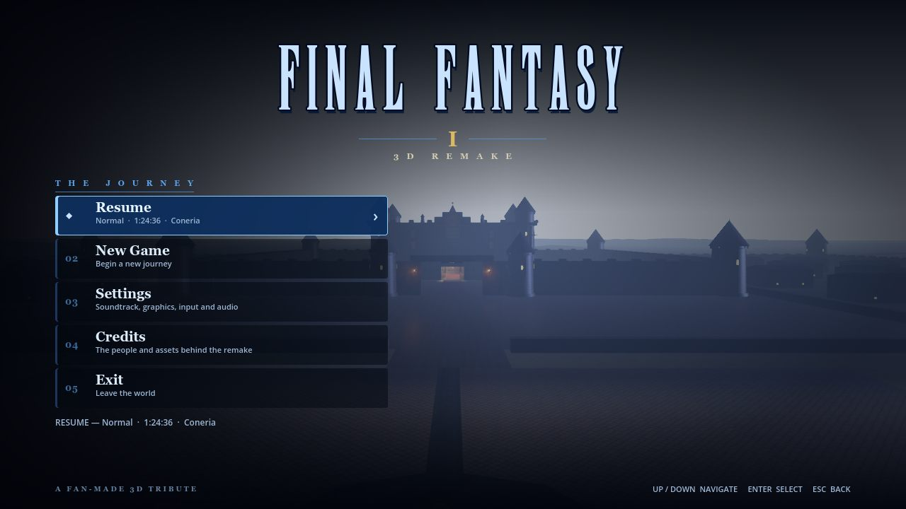
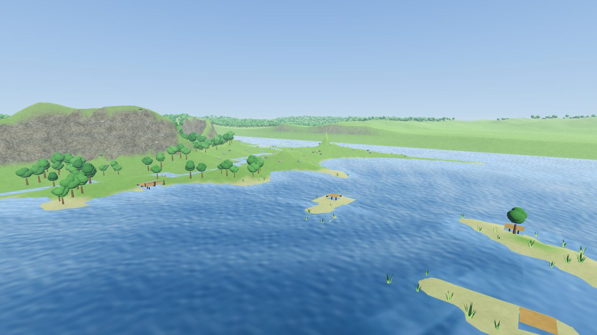

Fidelity before flourish
The NES ROM is the authority. Town plans, enemy stats, AI scripts, formations and encounter rates are extracted and validated against the source bytes — not retyped from memory or a wiki.
01 / 07 Project Overview
An independent, from-scratch 3D remake of Final Fantasy I, developed in Godot 4.7. Every original map, enemy table and encounter rule is decoded from the NES ROM itself — then rebuilt as a continuous 4 km world.

01.1 Creative vision
The remake does not reinterpret Final Fantasy I. It reconstructs it — first as data, then as geometry — and asks what that world looks like when the tiles are removed.
Final Fantasy I is a game about scale told in 16-pixel squares. A castle is four tiles wide. A continent fits on one screen. The imagination fills the rest.
This project takes the opposite approach. The original 256 × 256 overworld grid is decoded straight out of the ROM, then mapped at 15.625 metres per reference tile onto a 4,000 × 4,000 metre landscape. Coastlines, forests, mountain ranges and the relative position of every town stay exactly where the NES put them. Nothing is relocated to make a nicer composition.
The result is a world that is faithful in geography and entirely new in scale — a Coneria whose wall runs 214 metres, whose castle sits a hundred metres up a grass approach, and whose canals are crossed by bridges you can stand on.

The NES ROM is the authority. Town plans, enemy stats, AI scripts, formations and encounter rates are extracted and validated against the source bytes — not retyped from memory or a wiki.
No loading screens between regions. A 128 m cell streamer, distance LODs and a far horizon keep a 16 km² landscape resident without a single scene transition.
Gameplay rules are engine-independent and tested without rendering. A system is documented as working only when a deterministic suite says so.
01.2 Objectives
Five objectives govern every milestone decision. They are the reason some features ship late and others are deliberately refused.
01.3 What changes
A direct comparison of the 1990 NES release and this remake, limited to differences that exist in the build today or are explicitly scheduled.
| Aspect | NES original (1990) | This remake | State |
|---|---|---|---|
| World | 256 × 256 tile overworld, screen-by-screen | One continuous 4,000 × 4,000 m landscape, streamed in 128 m cells | Implemented |
| Movement | Grid-aligned walking, tile-step collision | Third-person controller with acceleration, climb, swim and a spring-arm camera | Implemented |
| Towns | Single-screen 2D maps with door tiles | Coneria reconstructed from its own town plan at 0.21 m per plan pixel; seven enterable buildings and four canal reaches | In development |
| Time & weather | Static daylight | Continuous day/night clock and seven weather states with wetness, settled snow and lightning | Implemented |
| Combat | Classic turn-based, front-view battle screen | Field combat with attack, lock-on and targeting; an Active Time Battle arena is scheduled but not built | In development |
| Journal | No quest log; guidance lives in NPC dialogue | Tales of Light — main story, side quests, completed tales and discoveries, plus a compact objective tracker | Implemented |
| Characters | 2D sprite classes chosen at the title screen | Rigged 3D heroes driven by a data file, with four exported MetaHuman bodies in the intake slot and a stylised shading pass | In development |
| Audio | NES 2A03 soundtrack and effects | Centrally routed music with selectable NES and Pixel Remaster soundtracks, seven mixable buses and crossfades | In development |
| Settings | None | Graphics, Input and Sound categories: presets, capability gating, full remapping, accessibility and persistence | Implemented |
"Implemented" means a system is present, verified by a headless suite and playable in the current working tree. "In development" means it works partially or its art and content pass is incomplete. Nothing on this page is a projection.
01.4 Current status
Two milestones are signed off, one is mid-art-pass, and the battle route that turns the slice into a playable game has not begun. That is the honest picture.
The Disch v1.0 disassembly builds to a byte-identical 262,160-byte ROM. Same SHA-256, zero differing bytes, exercised through intro, party creation, overworld, battle and victory in FCEUX 2.6.6.
Engine foundation and vertical slice: streaming terrain, collision, third-person controller, Coneria, interiors, NPC dialogue, HUD, swimming and the ocean. Geometry and characters are still blockout in places.
Environment, weather and water are integrated; Coneria's house kit, terrain materials and five tree species are in. The authored coast mesh, final water and architecture kit are not.